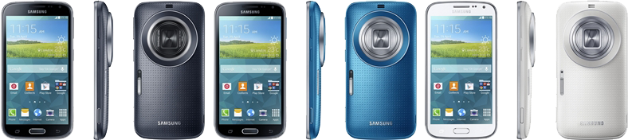

삼성 갤럭시 줌 2 (갤럭시 K 줌)
1. 외관

삼성전자가 갤럭시 K zoom이라는 정식 발매명으로 2014년 4월에 공개한 안드로이드 스마트폰.
2. 사양
| 프로세서 | 삼성 엑시노스 5260 SoC. ARM big.LITTLE↓, ARM Mali-T628 MP3 -- MHz GPU | ||
| 메모리 | 2 GB LPDDR3 SDRAM, 16 GB 내장 메모리, micro SDXC (최대 64 GB 지원) | ||
| 디스플레이 |
4.8인치 HD(1280 x 720) RG-BG 펜타일 서브픽셀 방식의 삼성D HD Super AMOLED 멀티터치 지원 정전식 터치 스크린 |
||
| 네트워크 | 기본 | LTE Cat.4, TD-LTE, HSPA+ 42Mbps, HSDPA & HSUPA & UMTS, TD-SCDMA, GSM & EDGE | Wi-Fi 802.11a/b/g/n, 블루투스 4.0, NFC |
| - | - | ||
| 카메라 | 전면 200만 화소, 후면 OIS 기술 탑재 2,070만 화소 AF 및 제논 플래시, 35mm 환산 24-240mm 광학 10배줌 지원 | ||
| 배터리 | Li-Ion 2430 mAh | ||
| 운영체제 | 안드로이드 4.4 (KitKat) | ||
| 규격 | 70.8 x 137.5 x 16.6 ~ 20.2 mm, 200 g | ||
3. 상세
2014년 4월 29일, 싱가포르에서 공개한 삼성전자의 카메라 특화 스마트폰이다.
2013년에는 카메라 특화 스마트폰이 갤럭시 S 시리즈의 파생 모델인 갤럭시 S4 Zoom으로 출시되었으나,
2014년부터 새로운 라인업으로 독립한 것으로 보인다.
다만, 갤럭시 K라는 기기가 갤럭시 S 1세대의 한국 KT 전용 이동통신사 커스텀 모델로 출시된 적이 존재했기 때문에 한국 내에서는 라인업에 대해 여러 이야기가 있었다.